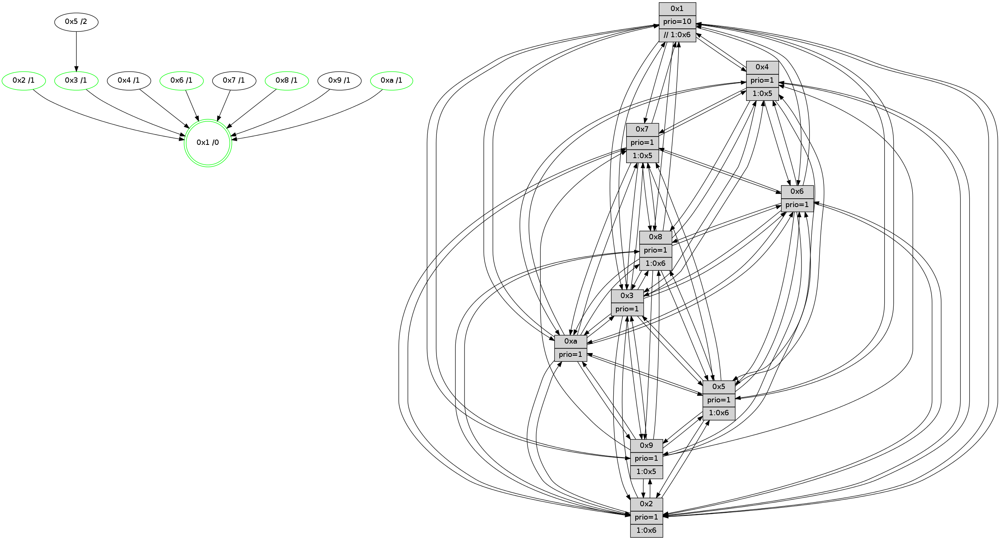

>> << IDX [start] -100 -25 -5 +0 +5 +25 +100 [1235.42981815]
 Previous packets
1230.002895 beacon08(faad) #0 coord=01,02,03,04,05,06,07,0a,09,08 cycle=688.0ms assoc 64 b4 55
1230.015057 [Hello(5): seq=785 sym=7,6,4,3,1,9,8,10,2 sysInfo=hasWarning stat=7:0,11,14,13/6:1,8,11,3/4:15,4,6,13/3:3,2,7,15/1:11,3,6,0/9:0,15,4,9/8:12,1,3,2/10:10,8,4,8/2:15,7,8,7]
1230.018093 [Color(10) seq=374 @0:0 prio=1]
1230.020819 [Hello(3): seq=785 sym=1,7,6,2,4,8,9,10,5 sysInfo=hasWarning stat=1:9,10,6,0/7:1,8,4,12/6:6,11,0,0/2:3,12,6,0/4:1,4,7,11/8:10,8,1,4/9:1,8,10,15/10:3,2,1,4/5:14,15,13,0]
1230.024602 [Color(3) seq=414 @0:0 prio=1]
1230.027802 [Hello(1): seq=694 sym=4,2,9,5,10,3,8,6,7 sysInfo=coloring-mode-on,ColoringModeRequestCalled stat=4:12,15,3,0/2:15,6,10,3/9:12,0,2,0/5:3,10,2,7/10:4,15,1,7/3:7,11,7,8/8:7,10,1,0/6:2,11,12,15/7:6,6,6,14]
1230.030982 [Hello(6): seq=785 sym=2,3,5,4,7,9,8,10,1 sysInfo=hasWarning stat=2:6,10,2,0/3:6,9,2,13/5:1,1,4,2/4:6,13,2,5/7:15,7,13,12/9:3,15,11,9/8:0,0,6,5/10:9,15,8,12/1:11,5,7,1]
1230.035399 [Color(6) seq=417 @0:0 prio=1]
1230.043851 [Hello(2): seq=781 sym=4,5,7,6,3,9,8,10,1 sysInfo=hasWarning stat=4:7,9,13,11/5:15,8,15,1/7:0,5,14,14/6:5,9,1,1/3:9,13,14,10/9:7,10,6,8/8:5,10,12,11/10:10,1,6,10/1:11,8,2,0]
1230.047316 [Color(2) seq=361 @0:0 prio=1 >1.@6,1.@7,1.@8,1.@9]
----------------------------------------------------------------------
1230.701035 beacon01(faad) #0 coord=01,02,03,04,05,06,07,0a,09,08 cycle=688.0ms assoc
-- color-indic=1 64 9d 80
1230.711017 beacon02(faad) #0 coord=01,02,03,04,05,06,07,0a,09,08 cycle=688.0ms assoc 64 0e b1
1230.721017 beacon03(faad) #0 coord=01,02,03,04,05,06,07,0a,09,08 cycle=688.0ms assoc 64 74 fc
1230.731018 beacon04(faad) #0 coord=01,02,03,04,05,06,07,0a,09,08 cycle=688.0ms assoc 64 03 16
1230.741018 beacon05(faad) #0 coord=01,02,03,04,05,06,07,0a,09,08 cycle=688.0ms assoc 64 79 5b
1230.751019 beacon06(faad) #0 coord=01,02,03,04,05,06,07,0a,09,08 cycle=688.0ms assoc 64 f7 8c
1230.761019 beacon07(faad) #0 coord=01,02,03,04,05,06,07,0a,09,08 cycle=688.0ms assoc 64 8d c1
1230.771024 beacon0a(faad) #0 coord=01,02,03,04,05,06,07,0a,09,08 cycle=688.0ms assoc 64 fc ca
1230.781022 beacon09(faad) #0 coord=01,02,03,04,05,06,07,0a,09,08 cycle=688.0ms assoc 64 72 1d
1230.791024 beacon08(faad) #0 coord=01,02,03,04,05,06,07,0a,09,08 cycle=688.0ms assoc 64 08 50
1230.802199 [Hello(9): seq=729 sym=2,5,3,4,7,6,8,10,1 sysInfo=hasWarning stat=2:1,15,3,9/5:8,2,4,6/3:15,8,10,1/4:12,14,4,0/7:14,7,8,1/6:13,5,0,12/8:11,11,5,3/10:5,14,9,4/1:9,4,9,1]
1230.806188 [Color(5) seq=361 @0:0 prio=1 >1.@6,1.@7,1.@8,1.@9]
1230.808068 [Hello(4): seq=785 sym=5,7,6,2,3,8,10,1 sysInfo= stat=5:6,11,4,0/7:8,15,9,1/6:7,10,9,13/2:13,14,0,15/3:5,5,10,13/8:3,8,1,0/10:6,14,0,14/1:5,13,7,1]
1230.811604 [Color(1) seq=466 @0:0 prio=10 >>1.@6,1.@7,1.@8]
1230.815216 [Hello(8): seq=729 sym=5,2,3,7,9,6,4,10,1 sysInfo=hasWarning stat=5:13,5,8,0/2:8,11,7,11/3:15,15,12,1/7:7,9,2,0/9:15,7,10,3/6:15,13,10,14/4:2,1,1,0/10:7,3,14,4/1:10,8,7,0]
1230.817813 [Hello(10): seq=718 sym=6,2,3,8,7,5,9,4,1 sysInfo=hasWarning stat=6:3,10,2,2/2:5,2,6,11/3:6,1,9,12/8:7,12,0,2/7:9,10,9,6/5:4,11,0,15/9:0,15,10,3/4:13,9,9,0/1:11,13,3,1]
1230.820387 [Hello(7): seq=785 sym=2,3,5,6,4,8,9,10,1 sysInfo=hasWarning stat=2:13,5,0,2/3:4,12,2,1/5:4,1,13,2/6:4,2,15,10/4:0,3,11,1/8:6,8,1,0/9:5,6,1,0/10:10,0,2,6/1:14,10,5,0]
1230.830452 [Color(8) seq=384 @0:0 prio=1 >1.@6,1.@7,1.@9,1.@a]
----------------------------------------------------------------------
1231.489165 beacon01(faad) #0 coord=01,02,03,04,05,06,07,0a,09,08 cycle=688.0ms assoc
-- color-indic=1 64 a9 98
1231.499148 beacon02(faad) #0 coord=01,02,03,04,05,06,07,0a,09,08 cycle=688.0ms assoc 64 3a a9
1231.509148 beacon03(faad) #0 coord=01,02,03,04,05,06,07,0a,09,08 cycle=688.0ms assoc 64 40 e4
1231.519147 beacon04(faad) #0 coord=01,02,03,04,05,06,07,0a,09,08 cycle=688.0ms assoc 64 37 0e
1231.529148 beacon05(faad) #0 coord=01,02,03,04,05,06,07,0a,09,08 cycle=688.0ms assoc 64 4d 43
1231.539148 beacon06(faad) #0 coord=01,02,03,04,05,06,07,0a,09,08 cycle=688.0ms assoc 64 c3 94
1231.549148 beacon07(faad) #0 coord=01,02,03,04,05,06,07,0a,09,08 cycle=688.0ms assoc 64 b9 d9
1231.559152 beacon0a(faad) #0 coord=01,02,03,04,05,06,07,0a,09,08 cycle=688.0ms assoc 64 c8 d2
1231.569153 beacon09(faad) #0 coord=01,02,03,04,05,06,07,0a,09,08 cycle=688.0ms assoc 64 46 05
1231.579155 beacon08(faad) #0 coord=01,02,03,04,05,06,07,0a,09,08 cycle=688.0ms assoc 64 3c 48
1231.590070 [Hello(1): seq=695 sym=4,2,9,5,10,3,8,6,7 sysInfo=coloring-mode-on,ColoringModeRequestCalled stat=4:12,15,3,0/2:0,7,10,3/9:13,0,2,0/5:3,10,2,7/10:5,15,1,7/3:7,11,7,8/8:8,11,1,0/6:3,12,12,15/7:7,6,6,14]
1231.594315 [Hello(2): seq=782 sym=4,5,7,6,3,9,8,10,1 sysInfo=hasWarning stat=4:8,9,13,11/5:0,9,15,1/7:1,5,14,14/6:5,9,1,1/3:9,13,14,10/9:8,10,6,8/8:6,11,12,11/10:11,1,6,10/1:11,9,2,0]
1231.596748 [Color(10) seq=375 @0:0 prio=1]
1231.598314 [Hello(6): seq=786 sym=2,3,5,4,7,9,8,10,1 sysInfo=hasWarning stat=2:7,11,2,0/3:6,9,2,13/5:2,2,4,2/4:6,13,2,5/7:0,7,13,12/9:4,15,11,9/8:1,1,6,5/10:10,15,8,12/1:11,6,8,1]
1231.601763 [STC(6)->1 #0.197 tree-change,inconsistent-stability,stable,to-color d=1]
1231.603449 [Color(2) seq=362 @0:0 prio=1 >1.@6,1.@7,1.@8,1.@9]
1231.606454 [Hello(5): seq=786 sym=7,6,4,3,1,9,8,10,2 sysInfo=hasWarning stat=7:1,11,14,13/6:2,9,11,3/4:0,4,6,13/3:4,3,7,15/1:12,4,6,0/9:1,15,4,9/8:13,2,3,2/10:11,9,4,8/2:0,8,8,7]
1231.614708 [Hello(3): seq=786 sym=1,7,6,2,4,8,9,10,5 sysInfo=hasWarning stat=1:10,11,7,0/7:2,8,4,12/6:7,12,0,0/2:4,13,6,0/4:1,4,7,11/8:11,9,1,4/9:2,8,10,15/10:4,2,1,4/5:15,0,13,0]
1231.618148 [STC(3)->1 #0.197 tree-change,inconsistent-stability,stable,to-color d=1]
1231.621382 [Color(3) seq=415 @0:0 prio=1]
1231.626653 [Color(6) seq=418 @0:0 prio=1]
----------------------------------------------------------------------
1232.277296 beacon01(faad) #0 coord=01,02,03,04,05,06,07,0a,09,08 cycle=688.0ms assoc
-- color-indic=1 64 15 9d
1232.287277 beacon02(faad) #0 coord=01,02,03,04,05,06,07,0a,09,08 cycle=688.0ms assoc 64 86 ac
1232.297277 beacon03(faad) #0 coord=01,02,03,04,05,06,07,0a,09,08 cycle=688.0ms assoc 64 fc e1
1232.307279 beacon04(faad) #0 coord=01,02,03,04,05,06,07,0a,09,08 cycle=688.0ms assoc 64 8b 0b
1232.317279 beacon05(faad) #0 coord=01,02,03,04,05,06,07,0a,09,08 cycle=688.0ms assoc 64 f1 46
1232.327278 beacon06(faad) #0 coord=01,02,03,04,05,06,07,0a,09,08 cycle=688.0ms assoc 64 7f 91
1232.337279 beacon07(faad) #0 coord=01,02,03,04,05,06,07,0a,09,08 cycle=688.0ms assoc 64 05 dc
1232.347284 beacon0a(faad) #0 coord=01,02,03,04,05,06,07,0a,09,08 cycle=688.0ms assoc 64 74 d7
1232.357286 beacon09(faad) #0 coord=01,02,03,04,05,06,07,0a,09,08 cycle=688.0ms assoc 64 fa 00
1232.367285 beacon08(faad) #0 coord=01,02,03,04,05,06,07,0a,09,08 cycle=688.0ms assoc 64 80 4d
1232.378458 [Hello(9): seq=730 sym=2,5,3,4,7,6,8,10,1 sysInfo=hasWarning stat=2:2,0,3,9/5:9,3,4,6/3:0,9,11,1/4:13,14,4,0/7:15,7,8,1/6:14,6,1,12/8:12,12,5,3/10:6,14,9,4/1:10,5,9,1]
1232.381021 [Hello(10): seq=719 sym=6,2,3,8,7,5,9,4,1 sysInfo=hasWarning stat=6:4,11,3,2/2:5,3,6,11/3:7,2,10,12/8:7,13,0,2/7:10,10,9,6/5:5,11,0,15/9:0,15,10,3/4:13,9,9,0/1:12,13,3,1]
1232.383818 [Hello(4): seq=786 sym=5,7,6,2,3,8,10,1 sysInfo= stat=5:7,11,4,0/7:9,15,9,1/6:8,11,10,13/2:14,15,0,15/3:6,6,11,13/8:4,9,1,0/10:7,14,0,14/1:6,14,7,1]
1232.386116 [Hello(8): seq=730 sym=5,2,3,7,9,6,4,10,1 sysInfo=hasWarning stat=5:14,5,8,0/2:9,12,7,11/3:0,0,13,1/7:7,9,2,0/9:0,7,10,3/6:0,14,11,14/4:2,1,1,0/10:7,3,14,4/1:11,8,7,0]
1232.388944 [Color(8) seq=385 @0:0 prio=1 >1.@6,1.@7,1.@9,1.@a]
1232.391522 [Hello(7): seq=786 sym=2,3,5,6,4,8,9,10,1 sysInfo=hasWarning stat=2:14,6,0,2/3:5,13,3,1/5:5,1,13,2/6:5,3,0,10/4:0,3,11,1/8:6,9,1,0/9:5,6,1,0/10:10,0,2,6/1:15,10,5,0]
1232.394739 [STC(5)->3-.->1 #0.197 to-color d=2]
----------------------------------------------------------------------
1233.065425 beacon01(faad) #0 coord=01,02,03,04,05,06,07,0a,09,08 cycle=688.0ms assoc
-- color-indic=1 64 d1 93
1233.075408 beacon02(faad) #0 coord=01,02,03,04,05,06,07,0a,09,08 cycle=688.0ms assoc 64 42 a2
1233.085408 beacon03(faad) #0 coord=01,02,03,04,05,06,07,0a,09,08 cycle=688.0ms assoc 64 38 ef
1233.095407 beacon04(faad) #0 coord=01,02,03,04,05,06,07,0a,09,08 cycle=688.0ms assoc 64 4f 05
1233.105408 beacon05(faad) #0 coord=01,02,03,04,05,06,07,0a,09,08 cycle=688.0ms assoc 64 35 48
1233.115408 beacon06(faad) #0 coord=01,02,03,04,05,06,07,0a,09,08 cycle=688.0ms assoc 64 bb 9f
1233.125409 beacon07(faad) #0 coord=01,02,03,04,05,06,07,0a,09,08 cycle=688.0ms assoc 64 c1 d2
1233.135413 beacon0a(faad) #0 coord=01,02,03,04,05,06,07,0a,09,08 cycle=688.0ms assoc 64 b0 d9
1233.155413 beacon08(faad) #0 coord=01,02,03,04,05,06,07,0a,09,08 cycle=688.0ms assoc 64 44 43
1233.166658 [Hello(1): seq=696 sym=4,2,9,5,10,3,8,6,7 sysInfo=coloring-mode-on,ColoringModeRequestCalled stat=4:12,15,3,0/2:1,8,10,3/9:14,0,2,0/5:4,10,3,7/10:6,15,1,7/3:8,12,8,8/8:8,12,1,0/6:4,13,13,15/7:8,6,6,14]
1233.170862 [Hello(5): seq=787 sym=7,6,4,3,1,9,8,10,2 sysInfo=hasWarning stat=7:1,11,14,13/6:2,10,11,3/4:0,4,6,13/3:5,4,8,15/1:12,4,6,0/9:1,15,4,9/8:13,2,3,2/10:11,9,4,8/2:0,8,8,7]
1233.173785 [Hello(6): seq=787 sym=2,3,5,4,7,9,8,10,1 sysInfo=hasWarning stat=2:8,11,2,0/3:6,9,2,13/5:2,2,5,2/4:7,13,2,5/7:1,7,13,12/9:5,15,11,9/8:1,2,6,5/10:11,15,8,12/1:12,6,8,1]
1233.176988 [Hello(3): seq=787 sym=1,7,6,2,4,8,9,10,5 sysInfo=hasWarning stat=1:11,11,7,0/7:3,8,4,12/6:7,13,0,0/2:4,13,6,0/4:2,4,7,11/8:11,10,1,4/9:3,8,10,15/10:5,2,1,4/5:15,0,14,0]
1233.181232 [Color(6) seq=419 @0:0 prio=1]
1233.183077 [Color(10) seq=376 @0:0 prio=1]
1233.184586 [Hello(2): seq=783 sym=4,5,7,6,3,9,8,10,1 sysInfo=hasWarning stat=4:9,9,13,11/5:1,9,0,1/7:2,5,14,14/6:5,10,1,1/3:10,14,15,10/9:9,10,6,8/8:6,12,12,11/10:12,2,6,10/1:12,9,2,0]
1233.187740 [Color(2) seq=363 @0:0 prio=1 >1.@6,1.@7,1.@8,1.@9]
1233.194290 [Color(3) seq=416 @0:0 prio=1]
----------------------------------------------------------------------
1233.853556 beacon01(faad) #0 coord=01,02,03,04,05,06,07,0a,09,08 cycle=688.0ms assoc
-- color-indic=1 64 6d 96
1233.863538 beacon02(faad) #0 coord=01,02,03,04,05,06,07,0a,09,08 cycle=688.0ms assoc 64 fe a7
1233.873540 beacon03(faad) #0 coord=01,02,03,04,05,06,07,0a,09,08 cycle=688.0ms assoc 64 84 ea
1233.883539 beacon04(faad) #0 coord=01,02,03,04,05,06,07,0a,09,08 cycle=688.0ms assoc 64 f3 00
1233.893539 beacon05(faad) #0 coord=01,02,03,04,05,06,07,0a,09,08 cycle=688.0ms assoc 64 89 4d
1233.903539 beacon06(faad) #0 coord=01,02,03,04,05,06,07,0a,09,08 cycle=688.0ms assoc 64 07 9a
1233.913540 beacon07(faad) #0 coord=01,02,03,04,05,06,07,0a,09,08 cycle=688.0ms assoc 64 7d d7
1233.923544 beacon0a(faad) #0 coord=01,02,03,04,05,06,07,0a,09,08 cycle=688.0ms assoc 64 0c dc
1233.933545 beacon09(faad) #0 coord=01,02,03,04,05,06,07,0a,09,08 cycle=688.0ms assoc 64 82 0b
1233.943546 beacon08(faad) #0 coord=01,02,03,04,05,06,07,0a,09,08 cycle=688.0ms assoc 64 f8 46
1233.955008 [Hello(4): seq=787 sym=5,7,6,2,3,8,10,1 sysInfo= stat=5:8,11,5,0/7:10,15,9,1/6:9,12,10,13/2:15,0,0,15/3:7,7,11,13/8:5,10,1,0/10:7,15,0,14/1:7,14,7,1]
1233.958058 [Hello(7): seq=787 sym=2,3,5,6,4,8,10,1 sysInfo=hasWarning stat=2:15,7,0,2/3:6,14,3,1/5:6,1,14,2/6:6,4,0,10/4:0,3,11,1/8:6,9,1,0/10:10,1,2,6/1:0,10,5,0]
1233.960419 [Color(1) seq=468 @0:0 prio=10 >>1.@6,1.@7,1.@8]
1233.964615 [Hello(8): seq=731 sym=5,2,3,7,9,6,4,10,1 sysInfo=hasWarning stat=5:15,5,9,0/2:10,13,7,11/3:1,1,13,1/7:8,9,2,0/9:1,7,10,3/6:1,15,11,14/4:2,1,1,0/10:8,4,14,4/1:12,8,7,0]
1233.967740 [Color(8) seq=386 @0:0 prio=1 >1.@6,1.@7,1.@9,1.@a]
1233.969552 [Hello(10): seq=720 sym=6,2,3,8,7,5,9,4,1 sysInfo=hasWarning stat=6:4,11,3,2/2:6,4,6,11/3:7,3,10,12/8:7,14,0,2/7:11,10,9,6/5:5,11,1,15/9:0,15,10,3/4:14,9,9,0/1:13,13,3,1]
1233.973967 [Hello(9): seq=731 sym=2,5,3,4,7,6,8,10,1 sysInfo=hasWarning stat=2:3,1,3,9/5:10,3,5,6/3:1,10,11,1/4:14,14,4,0/7:0,7,8,1/6:15,7,1,12/8:12,13,5,3/10:7,15,9,4/1:11,5,9,1]
----------------------------------------------------------------------
1234.641689 beacon01(faad) #0 coord=01,02,03,04,05,06,07,0a,09,08 cycle=688.0ms assoc
-- color-indic=1 64 79 f8
1234.651671 beacon02(faad) #0 coord=01,02,03,04,05,06,07,0a,09,08 cycle=688.0ms assoc 64 ea c9
1234.661671 beacon03(faad) #0 coord=01,02,03,04,05,06,07,0a,09,08 cycle=688.0ms assoc 64 90 84
1234.671671 beacon04(faad) #0 coord=01,02,03,04,05,06,07,0a,09,08 cycle=688.0ms assoc 64 e7 6e
1234.681671 beacon05(faad) #0 coord=01,02,03,04,05,06,07,0a,09,08 cycle=688.0ms assoc 64 9d 23
1234.691671 beacon06(faad) #0 coord=01,02,03,04,05,06,07,0a,09,08 cycle=688.0ms assoc 64 13 f4
1234.701673 beacon07(faad) #0 coord=01,02,03,04,05,06,07,0a,09,08 cycle=688.0ms assoc 64 69 b9
1234.711678 beacon0a(faad) #0 coord=01,02,03,04,05,06,07,0a,09,08 cycle=688.0ms assoc 64 18 b2
1234.721677 beacon09(faad) #0 coord=01,02,03,04,05,06,07,0a,09,08 cycle=688.0ms assoc 64 96 65
1234.731677 beacon08(faad) #0 coord=01,02,03,04,05,06,07,0a,09,08 cycle=688.0ms assoc 64 ec 28
1234.743164 [Hello(5): seq=788 sym=7,6,4,3,1,9,8,10,2 sysInfo=hasWarning stat=7:2,11,14,13/6:3,11,11,3/4:1,4,6,13/3:6,5,8,15/1:12,5,6,0/9:2,15,4,9/8:14,3,3,2/10:12,10,4,8/2:1,9,8,7]
1234.746923 [Hello(3): seq=788 sym=1,7,6,2,4,8,9,10,5 sysInfo=hasWarning stat=1:12,12,7,0/7:4,8,4,12/6:7,13,0,0/2:4,13,6,0/4:3,4,7,11/8:12,11,1,4/9:4,8,10,15/10:6,2,1,4/5:15,0,14,0]
1234.749740 [Color(3) seq=417 @0:0 prio=1]
1234.752707 [Hello(2): seq=784 sym=4,5,7,6,3,9,8,10,1 sysInfo=hasWarning stat=4:10,9,13,11/5:1,9,0,1/7:3,5,14,14/6:5,10,1,1/3:10,15,15,10/9:10,10,6,8/8:7,13,12,11/10:13,2,6,10/1:13,10,2,0]
1234.755519 [Color(10) seq=377 @0:0 prio=1]
1234.756810 [Color(2) seq=364 @0:0 prio=1 >1.@6,1.@7,1.@8,1.@9]
1234.764433 [Hello(1): seq=697 sym=4,2,9,5,10,3,8,6,7 sysInfo=coloring-mode-on,ColoringModeRequestCalled stat=4:13,15,3,0/2:2,9,10,3/9:15,0,2,0/5:5,10,3,7/10:7,0,1,7/3:9,13,8,8/8:9,13,1,0/6:5,14,13,15/7:8,6,6,14]
1234.768834 [STC(1) #0.198 tree-change,inconsistent-stability,stable,to-color d=0]
1234.770905 [Hello(6): seq=788 sym=2,3,5,4,7,9,8,10,1 sysInfo=hasWarning stat=2:9,12,2,0/3:6,10,2,13/5:2,2,5,2/4:8,13,2,5/7:2,7,13,12/9:6,15,11,9/8:2,3,6,5/10:12,0,8,12/1:13,7,8,1]
1234.774692 [Color(6) seq=420 @0:0 prio=1]